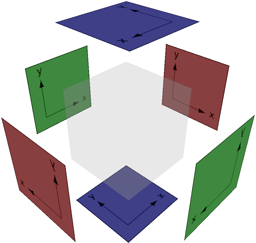

Skyboxes
From C4 Engine Wiki
Any world that is not completely enclosed by some kind of geometry needs to either specify a skybox or a clear color. Otherwise, you will see smearing in the directions for which you can see infinitely far away because nothing is redrawn in those areas from frame to frame.
Using a Clear Color
To specify a clear color for a world, you must modify the properties for the root zone by following these steps:
- Select the root zone of the world. This can be done by changing one of the viewports in the World Editor to the Scene Graph display (by right-clicking in the viewport and selecting Scene Graph) and then clicking on the node labeled Infinite Zone in the upper-left corner of the graph.
- Once the root zone is selected, open the Node Info dialog by typing Ctrl-I (or selecting Get Info from the Node menu).
- Go to the Properties tab in the Node Info dialog.
- Select the Clear Color property from the list of available properties, and then click the Assign button.
- Click the color box that appears for the property settings to change the clear color.
Using a Skybox

To specify the six texture maps corresponding to the six sides of the skybox, click on a skybox node and open the Node Info dialog by typing Ctrl-I (or selecting Node Info from the Node menu). The image at the right illustrates the orientation of the texture maps for the six faces. The red faces represent the positive and negative x directions, the green faces represent the y directions, and the blue faces represent the z directions. Not all faces need to be specified, and only those faces with texture maps specified will be rendered.
Each texture that is used in a skybox needs to be imported using the Texture Importer tool. The wrap modes should be set to Clamp in order to prevent seams where faces meet.
If the Above horizon only box is checked, then the texture maps for the positive and negative x and y directions should be half as tall as they are wide, and the skybox is rendered only above the horizon where z = 0.
If the Enable skybox glow box is checked, then the alpha channel of the skybox textures can be used to indicate glow intensity, and the glow postprocessing effect is applied to the skybox. Note that the skybox textures must have the alpha channel usage set to Glow intensity when they are imported if this option is used.
For a skybox to be rendered for any particular zone, the Render skybox in this zone box must be checked in the Node Info dialog for that zone. When a skybox-enabled zone is visible, the skybox is considered for rendering. If such a zone is only visible through a portal from another zone, then only the faces of the skybox that can be seen through the portal are rendered.